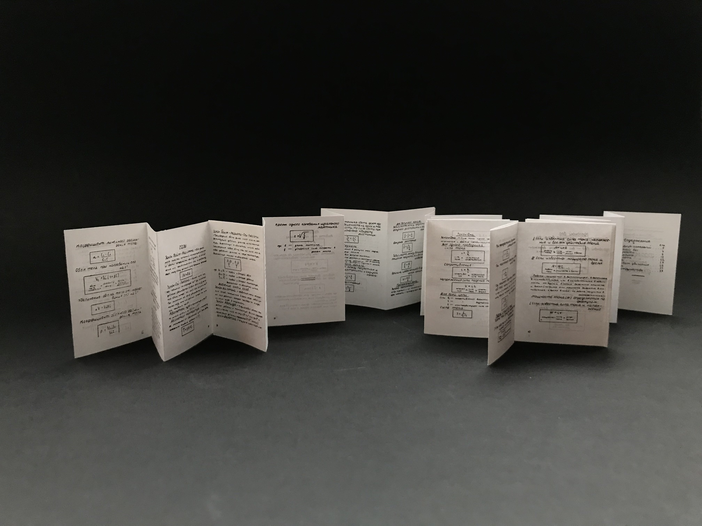
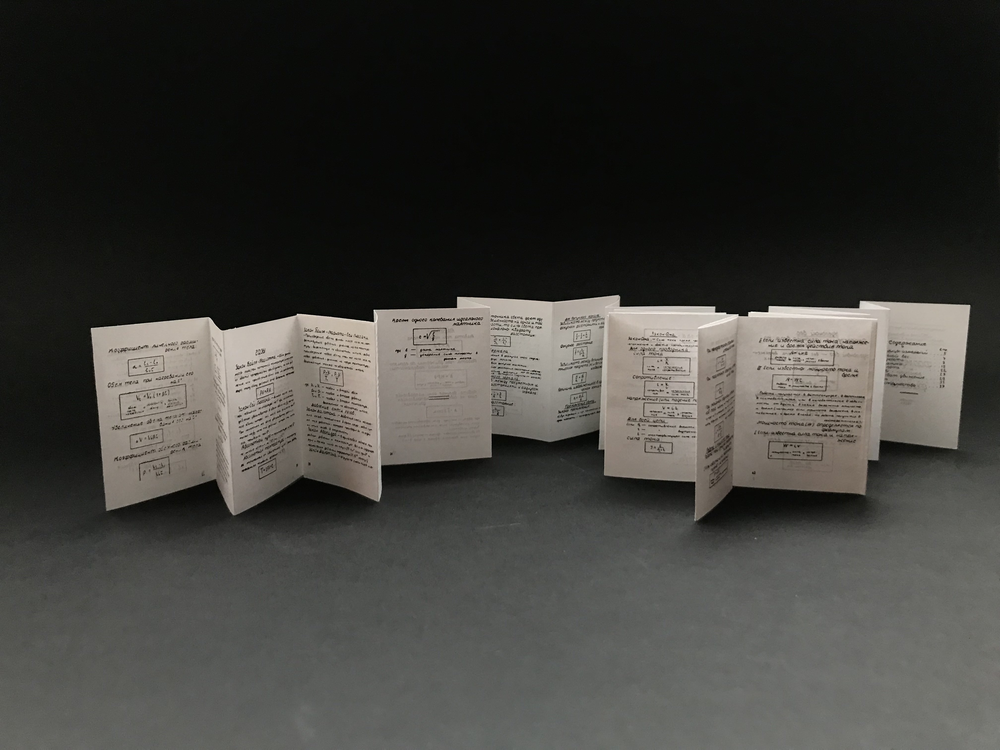

A book about a book
Book remake
This small book (45x63 mm) is a remake of 1933 book about physics. The original book looks like being handwritten even though its edition is 3000. Its typeset and content reminded me of cheatsheets which are usually made for school, so I decided to reduce the book size drastically, and it's folding to z-fold, which is typical for the cheatsheets. I tried to make it even smaller than a pocket size but still readable and easy to read through.

 
